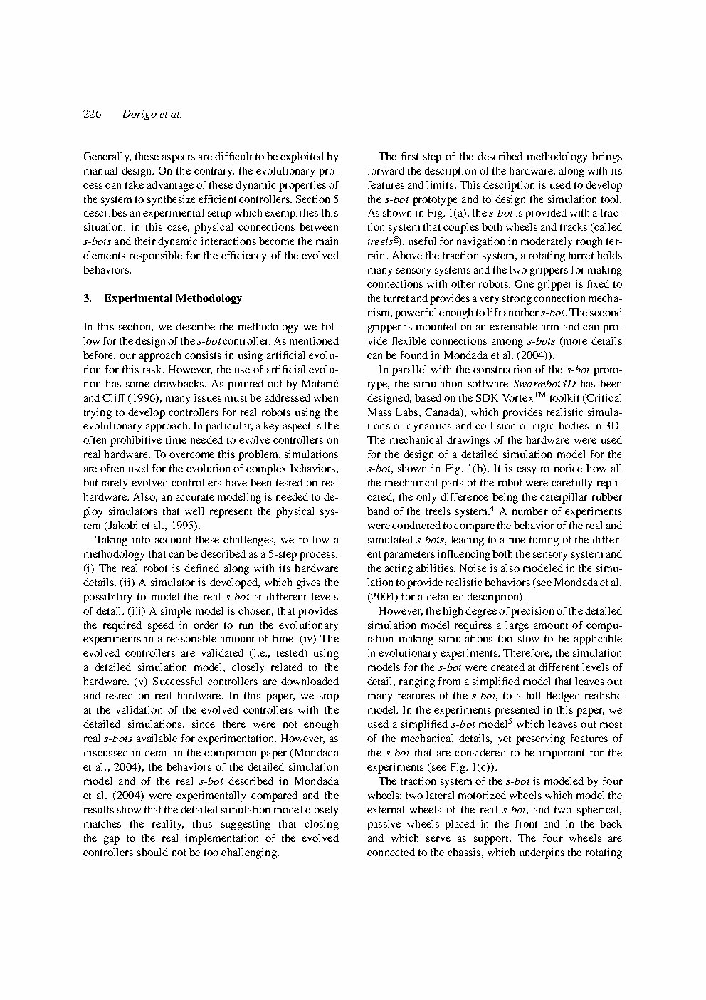
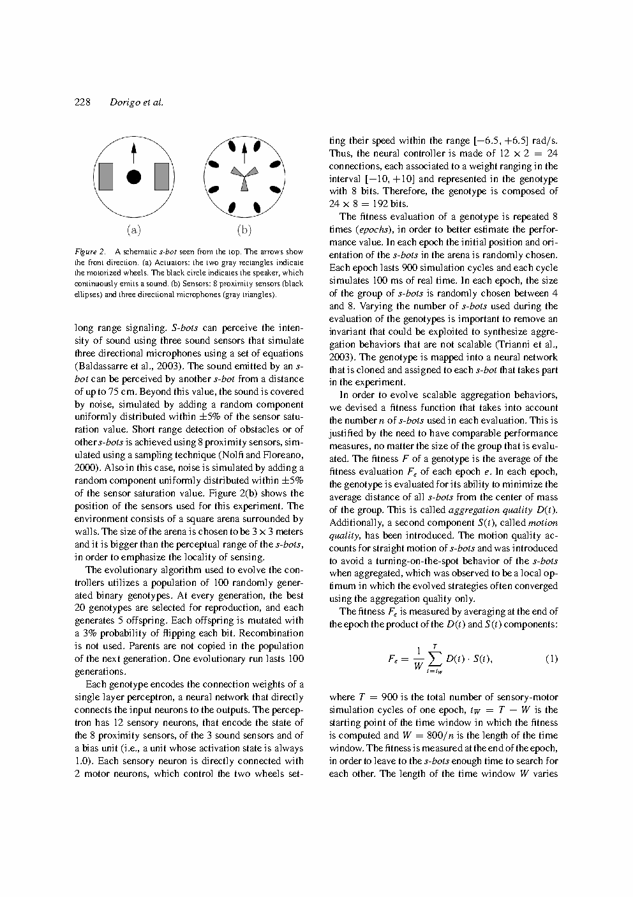
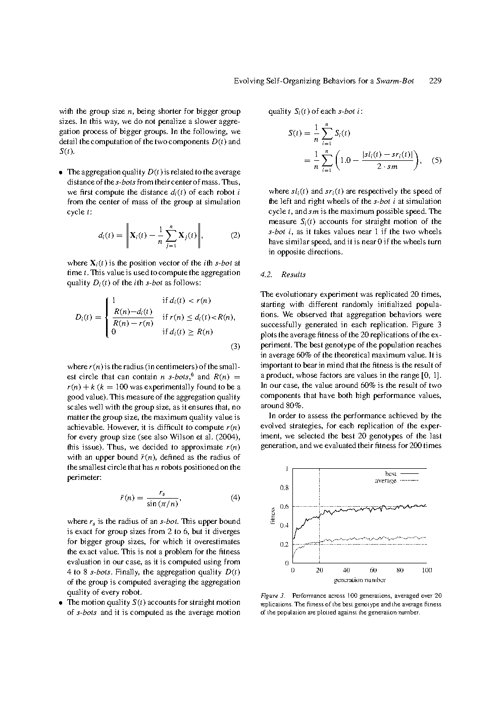

Evolving Self-Organizing Behaviors for a Swarm-bot
TL;DR
本笔记依据本目录 PDF 全文（23页）整理。论文入口：https://doi.org/10.1023/B:AURO.0000033973.24945.f3
2. 核心洞察与创新点
核心洞察 Q&A
A: swarm-bot 控制器设计面临分解难题（decomposition problem）：分布式个体规则与全局涌现行为之间存在高度非线性映射，自底向上预测和自顶向下分解都极其困难；s-bot间的物理连接引入耦合动力学（冲突力、僵持状态），使解析建模几乎不可行。人工进化提供了一条绕过分解的途径：不显式设计每个s-bot的角色或轨迹，只定义群体级适应度函数，让进化在闭环仿真中自动搜索能产生期望全局行为的局部感知-动作映射。此洞察为进化群体机器人学奠定了方法论基础。
灵感来源到核心洞察映射
| 灵感来源 | 核心洞察 | 对UAV群体的启示 |
|---|---|---|
| 社会性昆虫自组织（蚂蚁信息素、蜜蜂聚集）：个体遵循简单局部规则，无需全局认知即可涌现群体智能 | 进化算法可自动发现这些简单局部规则，不依赖研究者直觉。正反馈（声信号放大）与负反馈（密度饱和）的平衡通过适应度函数隐式编码 | UAV编队控制可借鉴"进化发现规则+手工约束"的混合范式：进化搜索局部感知-动作策略，安全约束保证飞行安全 |
| 具身智能（Embodied Intelligence）：物理形态本身是计算资源，身体-环境交互可简化控制 | 物理连接（gripper）和牵引力感知不是被动机械属性，而是隐式通信通道——s-bot无需无线通信即可通过牵引力感知群体运动意图，从而对齐方向 | UAV物理耦合不可行，但可利用气流感知、视觉相对定位、绳索张力等替代通道实现无显式通信的协调 |
| 神经进化（Neuroevolution）：神经网络权重可通过遗传算法搜索，无需梯度 | 参数共享使群体规模从输入维度解耦：无论多少s-bot，只有一个控制器需要进化。排列不变性约束消除等效冗余解 | UAV集群规模化需要同样解耦：每个UAV运行相同策略网络，不同局部观测自然产生行为多样性 |
| Sim-to-Real多层级验证：从简到详到实体，逐步降低迁移风险 | 进化在简化模型高速搜索，在详细模型验证——两级仿真策略降低计算成本，保留行为可迁移性信心 | UAV可采用"简化动力学模型进化 + 高保真SITL验证"加速迭代周期 |
创新点卡片
传统群体机器人控制器依赖研究者直觉和大量试错——必须预判"什么局部规则产生什么全局行为"，而这一映射通常反直觉。本文提出根本性替代：将整个swarm-bot作为不可分割的整体评估，只关心"群体是否完成任务"，不关心"每个s-bot应做什么"。这看似简单的视角转换，实际上将控制问题从分解空间（需理解个体-群体映射）移到评估空间（只需定义任务成功标准），后者难度远低于前者。这一思想启发了后来的"端到端群体强化学习"工作。
在协调运动中，已连接s-bot各自独立驱动车轮，天然产生冲突力——传统控制视角视为需抵消的扰动。进化实验揭示反直觉结果：进化出的策略主动利用物理交互力。牵引力传感器测量的力方向编码了群体当前平均运动意图——s-bot感知到某方向拉力，意味着其他s-bot正向该方向运动。进化出的控制器学会"顺应群体大势"而非对抗，证明物理耦合在适当传感-控制架构下可从干扰转化为隐式协调通道。
聚集实验中s-bot装备模拟扬声器——可发出声音，其他s-bot通过3个定向麦克风（120度排列）感知声源方向。进化不仅优化"如何响应声音"，还同时优化"何时发声"——构成完整的通信协议进化。协调运动实验未用扬声器（只依赖牵引力），但声信号的引入代表重要设计选择：将通信行为纳入进化搜索空间而非预设协议。对UAV集群通信策略设计有直接启发——与其预设通信内容和时机，不如让进化/学习发现高效通信模式。
3. 系统架构与流程
研究管道包含两条并行闭环：进化搜索闭环（简化仿真中迭代优化控制器参数）和群体运行闭环（控制器驱动s-bot与环境交互产生涌现行为）。进化闭环产生参数，群体闭环使用参数——通过"下载权重"接口耦合。
流程图 1: 进化搜索循环
40个随机基因型
各408 bits"] --> B["简化物理仿真评估
5个s-bot × 10 epochs
每epoch 600 cycles (60s)
随机位置与朝向"] B --> C["适应度计算
聚集: 最后100 cycles平均聚类质量
协调运动: 平均位移距离"] C --> D{"评估完成?"} -->|"是"| E["锦标赛选择
偏好高适应度个体"] D -->|"否"| B E --> F["按位变异
低突变率"] --> G["新一代40个基因型"] G --> H{"达到最大代数?"} -->|"否"| B H -->|"是"| I["选择最优基因型
解码为神经网络权重"] I --> J["详细仿真验证
Swarmbot3D+Vortex SDK
经实体校准模型
测试可扩展性泛化性"] J --> K["准备实体迁移
(本论文未完成)"]
流程图 2: Swarm-bot 群体控制架构
邻居/障碍物距离"]; S2["3定向麦克风
声源方向(120°)"] S3["3连接传感器
gripper状态"]; S4["1光栅传感器
物体在gripper内"] S5["牵引力传感器
x-y平面合力"] end subgraph CONTROL["共享神经控制器 (前馈感知器)"] C1["17输入(+bias)"] --> C2["51连接权重
全连接"] --> C3["3输出(sigmoid)"] end subgraph ACTION["执行器层"] A1["左轮"]; A2["右轮"]; A3["gripper动作"] end subgraph INTERACTION["物理交互与涌现"] I1["碰撞/声传播"] --> I2["物理连接/牵引力"] --> I3["群体涌现行为
聚集/协调运动/队形"] end S1 & S2 & S3 & S4 & S5 --> C1 C3 --> A1 & A2 & A3 --> I1 I1 -.->|"更新传感"| S1 & S2 I2 -.->|"牵引力反馈"| S5
流程图1中简化仿真评估内部运行的是流程图2的多个实例——每个候选基因型解码为控制器权重，在5个s-bot上同时运行并测量群体级适应度。流程图2是流程图1每轮评估的内循环。
仿真层级对比
| 层级 | 模型 | 物理引擎 | 精度 | 用途 | 计算成本 |
|---|---|---|---|---|---|
| Level 1 | 简化s-bot模型 | 自研简化刚体动力学 | 圆柱底盘+4轮+球形碰撞几何；虚拟gripper→动态关节；省略turret旋转和柔性gripper | 进化搜索（数千次仿真） | 低 |
| Level 2 | Swarmbot3D | Vortex SDK | CAD精确复制所有机械部件；关节摩擦、电机动力学、传感器噪声模型；经实体校准 | 控制器验证与可迁移性评估 | 高 |
| Level 3 | 真实s-bot | 物理世界 | 全物理真实性；磨损、光照、地面不平整等不可建模因素 | 最终验证（未完成） | 最高 |
4. 任务形式化
任务一：聚集（Aggregation）
给定 $N$ 个初始随机分布的s-bot，仅凭局部邻居信息和模拟声信号，在有限时间内形成单一紧密簇。聚集是实现协作任务的前提条件。
任务二：协调运动（Coordinated Motion）
给定 $N$ 个已通过gripper物理连接的s-bot，各自独立运行相同控制器并驱动车轮，使整体结构以最快共同速度向一致方向运动。没有预设领队——通过牵引力交互自组织协商方向。
输入/输出规范
| 项目 | 聚集任务 | 协调运动任务 |
|---|---|---|
| 输入（每s-bot） | 8红外接近传感器（归一化距离）；3定向麦克风（声强+方向）；连接传感器（二元）；bias | 8红外接近传感器；牵引力传感器（x-y力向量，2维）；连接传感器（3维）；bias |
| 输出（每s-bot） | 左轮速度 $v_L \in [-1,1]$；右轮速度 $v_R \in [-1,1]$；扬声器激活 | 左轮速度 $v_L \in [-1,1]$；右轮速度 $v_R \in [-1,1]$；gripper控制 |
| 进化规模 | $N=5$；泛化测试 $N=10,15,20$ | $N=4$（线性连接）；泛化测试 $N=6,8$ |
| 仿真时长 | 10 epochs × 600 cycles × 100ms/cycle = 600s | 5 trials × 150 cycles × 100ms/cycle = 75s |
| 成功标准 | 所有s-bot在50cm半径内形成紧密簇 | 群体以显著非零平均速度向一致方向运动 |
关键任务特征
- 分布式感知：每个s-bot仅观测局部范围内的邻居和环境，无全局位置信息——与真实群体机器人传感约束一致。
- 同质控制器：所有s-bot运行完全相同神经网络（参数共享），进化必须发现适用于任意局部情境的通用策略。
- 闭环交互：s-bot动作改变自身位置，进而改变邻居传感器读数，进而影响邻居动作——双向耦合使开环设计不可行。
- 无需全局通信：协调运动中所有信息通过物理牵引力传递——验证"物理交互足以支持群体协调"的关键假设。
5. 挑战分析
第一性原理分析
当 $N$ 个s-bot通过gripper连接后，每个s-bot通过车轮施加的力矩不仅影响自身运动，还通过刚体连接传递到所有其他s-bot。s-bot的控制决策必须隐式考虑其他 $N-1$ 个s-bot的当前状态和未来动作——而这些信息不可观测（无全局通信）。当运动意图冲突时（一半向左一半向右），产生僵持状态——所有s-bot输出力矩但整体不动。打破僵持需要某s-bot"让步"，时机和方式难以预编程。
已有方法对比
| 方法类别 | 核心思路 | 在swarm-bot的局限 | 适用条件 |
|---|---|---|---|
| 手工设计 | 编写if-then规则或有限状态机，规定每种感知状态下的动作 | 需预判所有交互场景——s-bot数量、连接拓扑、初始构型组合爆炸，手工枚举不可行。研究者对涌现映射的直觉通常不准 | 简单场景、少量机器人、可分离任务 |
| 解析建模 | 微分方程或概率模型推导最优控制律 | 物理连接引入非光滑接触动力学和约束力，模型要么过于简化丢失关键效应，要么过于复杂不可解。离散连接/断开事件破坏连续性假设 | 无物理接触、可微分动力学 |
| 模仿学习 | 从演示学习控制策略 | 在2004年语境下未成熟。更根本的是人类也难以同时遥控多个耦合s-bot产生"好演示" | 存在高质量演示数据 |
| 人工进化（本文） | 在仿真中遗传算法搜索神经网络权重，群体级适应度为优化目标 | 计算成本高（大量仿真）；适应度设计影响搜索方向；仿真到实体的现实鸿沟 | 群体级目标可量化、仿真足够准确 |
5大挑战
- 挑战1：分解难题——如何将"群体形成紧密簇"或"协调向同一方向运动"这样的全局目标分解为每个s-bot的局部感知-动作规则？不存在解析映射。
- 挑战2：物理僵持——多个连接s-bot向冲突方向驱动时整体静止。进化必须发现打破对称性的策略：某些s-bot主动调整方向顺应群体。
- 挑战3：感知稀疏性——红外8方向（45度分辨率）、麦克风3方向（120度分辨率），所有读数局部和相对。s-bot不知绝对位置、群体分布和目标方向。
- 挑战4：仿真到实体鸿沟——进化在简化仿真中进行，策略可能依赖仿真特有物理（无滑移碰撞、完美传感器），迁移即失效。
- 挑战5：适应度设计——适应度需同时具备区分性（分辨好坏）和平滑性（有梯度引导）——两者常冲突。
6. 方法与关键公式
神经控制器结构
每个s-bot由单层前馈感知器（无隐藏层）控制：
$$\sigma(z) = \frac{1}{1 + e^{-z}}, \quad x_j \in [0, 1]^{17}, \quad w_{kj} \in [-10, 10], \quad y_k \in [0, 1]^{3}$$
基因型编码：51个权重 × 8 bits = 408 bits二进制串，每个权重量化256等级，映射到 $[-10, 10]$。
聚集适应度函数
最后100个周期平均聚类质量，鼓励s-bot不仅聚集而且保持聚集：
$$f_i(t) = \begin{cases} 1 - d_i(t)/50\text{cm} & d_i(t) < 50\text{cm} \\ 0 & \text{otherwise} \end{cases}$$
$$d_i(t) = \|\mathbf{p}_i(t) - \mathbf{p}_{cm}(t)\|$$
设计意图：50cm阈值定义"成功聚集"空间尺度。$1-d_i/50$线性衰减使"更紧密"得分更高。最后100周期取平均避免惩罚探索初期——s-bot可在前500周期"想办法"靠拢。
协调运动适应度函数
5次试验取平均降低初始条件随机性影响——好的控制器应在各种初始朝向下快速达成一致。
进化参数
| 参数 | 值 | 说明 |
|---|---|---|
| 种群规模 | 40个体 | 小家规模，因每轮评估需运行多s-bot仿真 |
| 基因型长度 | 408 bits | 51权重 × 8 bits/权重 |
| 选择方式 | 锦标赛选择 | 随机选k个个体，适应度最高者进入下一代 |
| 变异率 | 按位翻转，低突变率 | 每bit独立小概率翻转；保持搜索局部性，避免破坏优秀权重模式 |
| 交叉 | 单点/多点交叉 | 组合优秀个体的基因片段 |
| 评估 | 5 s-bot × 10 epochs × 600 cycles | 每epoch重置初始条件，10 epoch适应度取平均降低起点偶然性 |
| 终止 | 固定代数或收敛 | 数十到数百代内观察收敛 |
方法论要点
- 无隐藏层设计：17→3感知器是最简神经网络。两层含义：搜索空间小（仅51参数）加速收敛；可解释性——进化后可直接分析权重矩阵，反向推导行为策略。多层网络会丧失此特性。
- 适应度仅最后周期计算：聚集只统计最后100周期——隐式的课程学习，允许s-bot在前500周期自由探索临时策略。
- 多试验取平均：协调运动5次试验取平均是域随机化的早期实践——在多种初始条件下评估同一控制器，选择"分布"上好而非"单点"好的。
- 两级仿真：简化模型搜索（40×代数次），详细模型仅验证最优个体。假设：简化模型中的适应度排序与详细模型大致一致——这决定整个方法论的有效性。
7. 基本原理深度解析
7.1 为什么进化能绕过分解难题？
进化维护候选规则种群，每个候选在仿真中"实地执行"，产生的全局行为被测量并与目标比较。信息流变为：随机候选→仿真执行→测量全局结果→与目标比较→保留/淘汰→变异产生新候选。设计者从不需要知道个体-群体映射关系——这一映射被隐式编码在"仿真执行+测量比较"中。这类似自然进化：自然选择不需要"理解"为什么某性状有利于生存，只需性状被测试、优胜劣汰。
7.2 物理耦合作为隐式通信通道
简化物理模型：$N$ 个s-bot线性连接，每个试图以速度 $v_i$ 运动。由于刚性约束，所有s-bot实际速度必须相同：
这意味着：若牵引力指向运动方向反方向，说明群体平均方向与自己不同——应调整。若牵引力接近零，说明已与群体一致。这个简单物理关系使s-bot无需显式通信即可推断运动方向。UAV不能物理连接，但气流感知（机载风速计感知下洗气流）、视觉相对运动估计或虚拟弹簧-阻尼耦合可作为类似隐式协调通道。
7.3 参数共享与群体规模解耦
- 可扩展性：小群体（N=5）进化，大群体（N=20）使用——论文实验证实。
- 搜索空间压缩：从 $256^{51N}$ 压缩到 $256^{51}$（8位量化下），使进化计算可行。
参数共享引入排列不变性约束——交换任意两s-bot不应改变行为（控制器相同）。此约束帮助进化消除大量等效冗余解，使搜索聚焦于本质策略差异。
8. 实验结果与证据
8.1 聚集实验
设置：5个s-bot随机放置，运行进化控制器。适应度为最后100周期聚类质量。
结果：
- 进化发现可靠聚集策略：所有s-bot有限时间内收敛到紧密簇（距质心50cm内），聚集后保持稳定不会散开。
- 涌现策略本质：权重分析揭示s-bot学会向声源方向运动——通过麦克风感知声音，向声强最大方向运动。同时，何时发声也受进化控制：通常附近有邻居（红外检测到）时才发声。形成自组织正反馈循环：聚集s-bot发声吸引更多s-bot，更多s-bot加入后发出更强声音扩大聚集范围。
- 可扩展性：部署到10、15、20个s-bot（进化仅用5个）仍有效聚集——证明参数共享的规模泛化。
- 泛化性：不同初始构型（分散象限分布等）仍完成聚集。
8.2 协调运动实验
设置：4个s-bot线性连接，各自独立驱动车轮。初始朝向随机，经历"混乱→对齐→协调"三阶段。
结果：
- 进化发现利用牵引力的协调策略：感知到反向牵引力时减小该方向输出力矩或反转方向顺应群体——"让步"行为涌现，无显式编程。
- 对齐速度：通常20-40周期（2-4秒）内完成方向对齐，之后稳定协调运动。
- 可扩展性：部署到6、8个s-bot仍协调运动。更多s-bot=更多冲突力但也产生更强牵引力信号——正反馈加速对齐。
- 拓扑泛化：T形和不规则连接拓扑上仍有效——策略不依赖特定连接几何。
8.3 详细仿真验证
最优控制器导入Swarmbot3D（CAD级精度、真实摩擦、传感器噪声）：
- 聚集迁移成功：虽因更真实物理（碰撞能量损失）聚集速度稍慢，但仍能完成任务。
- 协调运动迁移成功：摩擦更大使对齐稍慢，但协调运动质量相当。
初步验证"两级仿真策略"有效性——简化模型进化出的控制器在详细模型中工作，暗示实体迁移可行。
8.4 控制器可解释性
- 聚集控制器：麦克风→车轮权重最大——声信号是主要驱动通道，与"向声源运动"策略一致。
- 协调运动控制器：牵引力→车轮权重具有强烈符号模式——感知左侧力时左轮输出减小、右轮增大（或反之）实现方向调整。
- 红外传感器：主要用于避碰——邻居过近时抑制向该方向运动。
8. 论文图表解读

描述：s-bot采用圆柱形底盘（直径约12cm），两个差分驱动电机轮+两个被动球形脚轮。顶部旋转turret集成刚性gripper（可举起另一s-bot）和可伸缩柔性gripper（地面抓取）。8红外接近传感器底盘周围均匀分布（45度间隔），3麦克风turret上120度排列，牵引力传感器在底盘连接处。理解物理布局对解释进化策略至关重要——45度红外分辨率足以支持聚集因为不需要精确角度，只需大致方向。

描述：(a) 适应度随代数收敛曲线——从初始随机权重（适应度接近零，s-bot随机移动）到最终高适应度（可靠聚集）的渐进改善。曲线呈阶梯状上升——表明进化发现策略"突破点"（如学会向声源运动），适应度跳跃。(b) 多时间点s-bot位置快照：初始散乱→形成小簇→小簇合并→单一紧密簇。关键观察：进化策略非让所有s-bot向固定点运动，而是让动态形成的局部簇相互吸引合并——自组织的层次化聚集过程。

描述：(a) 初始：4个s-bot线性连接但朝向各不相同，整体"扭动"，位移极小。(b) 对齐：通过牵引力反馈s-bot逐渐调整车轮输出，方向趋同。(c) 协调运动：所有s-bot以一致方向稳定移动，轨迹近乎直线。可能含各s-bot牵引力方向时间序列（混乱→一致）、群体质心速度时间曲线（零→稳定巡航）、不同规模（N=4,6,8）对比。关键发现：更大群体对齐更快——更强的牵引力信号加速正反馈。
9. 局限性、扩展与敏感度分析
论文局限性（4项）
- 仅覆盖基础行为原语：聚集和协调运动是最基础的两种群体行为。未展示如何组合成复杂任务链（"聚集→连接→协调运动到目标→断开→分散搜索"）。从原语到任务链需更高级的行为编排机制（分层控制器或状态机），不在本文范围。
- 实体验证缺失：详细仿真虽经实体校准（Mondada et al. 2004），但未下载控制器到真实s-bot运行群体实验。仿真到实体的不可建模因素（地面材质、光照对红外影响、gripper磨损导致连接力变化）未被评估。
- 适应度依赖研究者先验：聚集适应度用"距质心距离"——隐式假设研究者知道"好的聚集"是什么样。在更复杂任务中，合理的中间行为标准未知——适应度的稀疏性（二元成功/失败）可能导致进化无法起步。
- 静态环境假设：所有实验在静态环境中进行——无移动障碍物、无动态目标、无对抗干扰。固定权重控制器在动态环境中可能适应性不足。
合理扩展方向（4项）
- 进化复杂行为链：将聚集和协调运动作为子任务，进化高层任务切换控制器——如通过光强传感器触发行为切换，实现"聚集后协调向光运动"。
- 进化通信协议：协调运动中也引入声学通信，同时优化控制策略和通信策略——揭示显式通信能否进一步提升效率，何种通信内容最有价值。
- 异质群体进化：允许s-bot间功能分化——进化分配不同角色（领航者vs.跟随者），探索异质优于同质的条件。
- 在线进化/终身学习：从离线预训练扩展到在线持续适应——任务执行中根据实际表现微调参数，逐弥合仿真到实体鸿沟。
敏感度雷达
| 敏感维度 | 等级 | 说明 |
|---|---|---|
| 适应度函数设计 | ★★★★★ | 进化搜索的唯一引导信号。50cm阈值过大→满足松散簇；过小→初期所有个体适应度为零进化无法启动。协调运动的位移适应度可能被"原地旋转但质心不动"策略欺骗——需补充方向一致性指标。 |
| 仿真保真度 | ★★★★★ | 两级策略依赖简化模型中适应度排序与详细模型一致。若简化模型系统性偏差（如低估摩擦力导致偏好高速度高能耗策略），详细仿真和实体表现可能大幅下降——核心风险。 |
| 群体规模泛化 | ★★★★☆ | 参数共享保证形式规模无关性，但实际行为可能随规模产生相变——N=5有效的声学聚集，N=50时可能声音过载（所有s-bot同时发声声场饱和）失效。论文验证线性扩展（5→20），指数级扩展未知。 |
| 初始构型泛化 | ★★★★☆ | 测试范围有限——若s-bot初始分布在多个不相交的遥远区域（超出传感器范围），缺乏邻居信号时需随机游走增大相遇概率，涉及探索-利用权衡。 |
| 实体迁移可行性 | ★★★★☆ | 整个方法论的未验证环节。关键风险：传感器噪声模型是否足够真实？gripper连接动力学（特别是柔性gripper）在实体上与Vortex仿真是否一致？ |
本文方法论可理解为：将控制问题转化为搜索问题——研究者不设计"怎么做"，转而设计"什么是好的"（适应度函数）。代价是适应度中编码了研究者对"好行为"的全部隐性假设和偏见。若对任务理解有误或不全（如遗漏"能耗最小化"），进化出的控制器就会在遗漏维度表现不佳。这不是进化的失败，而是问题定义的失败——进化忠实地优化了你要求它优化的东西。这在工程上被称为奖励设计问题或古德哈特定律（Goodhart's Law）——"当一个度量成为目标时，它就不再是一个好的度量。"
10. 动机推导：从问题到方案的思维链
五步推导
Step 1 — 确认结构瓶颈。2004年群体机器人学成果几乎都假设无物理接触。swarm-bot引入根本性新约束：s-bot可物理连接——同时是能力增益（合作搬运超个体能力重物、跨越个体无法跨越的沟壑）和控制挑战（耦合动力学使传统分解式设计失效）。瓶颈不是"现有控制器性能不够好"，而是现有控制器架构从根本上不适用于物理耦合场景。
Step 2 — 识别直接解决瓶颈的方法。如果手工分解个体-群体映射不可行，需要无需分解的控制器获取方法——指向"黑箱优化"范式。进化算法恰好是最经典的黑箱优化方法：不需梯度（群体行为梯度通常不可求），不需解析模型（系统过于复杂），只需能评估候选解的相对质量。
Step 3 — 设计适配该方法的适应度函数。关键原则：(1)适应度必须是群体级的；(2)必须能从仿真可观测变量（位置、速度）自动计算；(3)必须有梯度信息——即使初始随机策略很差也应得非零适应度以便进化有方向可循。这解释了聚集适应度用"距质心线性衰减"而非"是否在阈值内二元判定"。
Step 4 — 构建搜索到验证的完整管道。搜索效率要求最快仿真（简化模型），验证可靠性要求最真实仿真（详细模型）。矛盾通过两级管道解决——简化模型搜索，详细模型验证。关键假设是保真度单调性：简化模型中适应度更高的个体在详细模型中也倾向于更高。这需要简化模型保留关键物理特征（接触碰撞、摩擦力方向、传感器遮挡效应），即使数值精度不够。
Step 5 — 设计泛化性验证实验。仅在训练条件（5个s-bot、特定初始分布）下有效的控制器无实用价值。通过系统改变群体规模（5→10→15→20）和初始构型，测量控制器性能退化曲线——渐进退化说明学到了可泛化策略，骤降说明只记住了训练时特定模式。
一句话总结
如何抵达本文方案
11. 关键启示与UAV应用
核心启示（4条）
- 进化是克服"分解难题"的通用方法论：当个体交互规则与全局涌现行为的映射过于复杂而无法解析推导时，不要试图理解映射——直接搜索映射。这不限于群体机器人学，任何多智能体分布式控制问题（交通流控制、供应链优化、多UAV任务分配）都可受益。
- 物理交互是资源而非障碍：传统控制将个体间物理力视为需补偿的干扰。本文通过让进化利用牵引力作为协调信息源，展示物理交互在适当传感架构下可成为免费通信通道。设计群体系统时不要急于消除交互，而应思考如何将交互转化为信息源。
- 参数共享是规模泛化的关键架构选择：将控制器参数与群体规模解耦，训练和部署可在不同规模下进行。对UAV集群，参数共享应被视为默认架构。
- 两级仿真是sim-to-real的实用折中：不追求仿真与现实完美匹配（不可能），而是追求简化仿真中适应度排序与真实环境排序一致。需在简化模型中保留影响行为的最关键物理特征——这要求设计者具备判断"哪些特征对行为关键"的domain expertise。
UAV群体应用分析
1. UAV编队控制的进化合成。类似swarm-bot协调运动，多旋翼UAV编队控制（V形、圆形包围）可尝试通过进化发现局部规则。每UAV配备相对位置传感器（视觉检测或UWB），运行共享神经网络。适应度编码编队质量（期望形状与实际偏差、维持稳定性）。关键区别：UAV无物理连接无牵引力感知——需用虚拟力（基于相对位置的虚拟弹簧力）替代，在仿真中计算并作为控制器输入。
2. 空中对接与协同运输。swarm-bot可连接性对应UAV领域的空中对接或绳索协同运输（多UAV cable-suspended payload）。绳索连接与gripper连接结构相似——引入物理耦合。进化可在仿真中搜索多UAV绳索连接共同吊运负载时的分布式控制策略，利用绳索张力（类似牵引力）作为隐式协调信号。
3. UAV集群搜索与聚集。swarm-bot聚集行为对应UAV集群搜索-集结（search and rendezvous）——多UAV在未知区域搜索后聚集到指定位置。进化出的声学聚集可替换为RF信号强度或光信号——UAV广播信号，其他UAV通过信号梯度导航。进化优势在于同时优化"何时广播"和"如何响应"的耦合策略。
4. 通信退化下的鲁棒协调。swarm-bot协调运动不依赖无线通信（仅物理牵引力），此特性对UAV有重要启示：通信不可靠或被干扰时，非通信协调通道（视觉互观测、气流感知、基于行为预测的隐式协调）成为维持群体秩序的关键。进化可用于发现通信退化条件下的最优传感器融合权重——哪些感知通道在通信丢失时应被"升权"。
5. 作为UAV群体强化学习的前身。本文是最早的进化策略+多智能体工作之一。在深度学习时代，进化策略被重新发现为RL有效替代（OpenAI ES for MuJoCo）。将本文框架升级为"深度神经网络控制器+进化策略+高保真UAV仿真"完全可行——17输入感知器替换为CNN/LSTM处理视觉输入，遗传算法替换为现代进化策略（CMA-ES、PEPG）。
6. 仿真保真度分层策略的UAV适配。UAV控制器进化可借鉴"简化动力学→SITL→高保真仿真→真实飞行"多级管道。简化层用点质量模型（忽略气动），SITL层用PX4/ArduPilot软件在环，高保真层用Gazebo+AirSim完整气动仿真。与本文两级管道逻辑一致，只是层级更多保真度跨度更大。
相关参考文献
| # | 文献 | 与本文关系 |
|---|---|---|
| [1] | Mondada, F. et al. (2004). "Swarm-Bot: A New Distributed Robotic Concept." Autonomous Robots, 17(2-3), 193-221. | swarm-bot硬件设计和详细仿真校准的配套论文，详细描述s-bot机电架构及Swarmbot3D仿真与实体标定过程。 |
| [2] | Trianni, V., Nolfi, S., & Dorigo, M. (2006). "Cooperative Hole Avoidance in a Swarm-bot." RAS, 54(2), 97-103. | 后续工作，将进化扩展到"躲避孔洞"任务，首次引入进化通信协议——扬声器激活本身由进化控制。 |
| [3] | Nolfi, S. & Floreano, D. (2000). Evolutionary Robotics. MIT Press. | 进化机器人学奠基专著。Floreano为本文作者之一，提供完整理论背景——神经进化、适应度设计、sim-to-real迁移等。 |
| [4] | Dorigo, M., Birattari, M., & Brambilla, M. (2014). "Swarm Robotics." Scholarpedia, 9(1), 1463. | Dorigo对群体机器人学综述，将本文定位为进化群体机器人学开创性成果。阐述自组织、可扩展性、鲁棒性三大核心原则。 |
| [5] | Chung, S. J. et al. (2018). "A Survey on Aerial Swarm Robotics." IEEE TRO, 34(4), 837-855. | UAV群体机器人学现代综述，详述编队控制、任务分配、轨迹规划。本文进化方法可作为"学习型方法"一节的补充案例。 |
| [6] | Salimans, T. et al. (2017). "Evolution Strategies as a Scalable Alternative to Reinforcement Learning." arXiv:1703.03864. | 深度学习时代进化策略复兴之作。本文技术路线（GA搜索NN权重）可视为该工作早期前身。升级为ES+深度网络组合是自然演进方向。 |